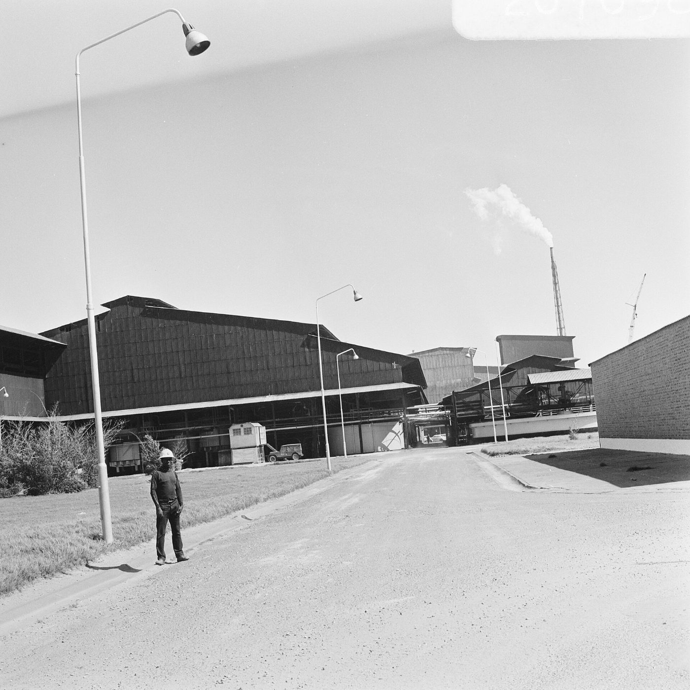
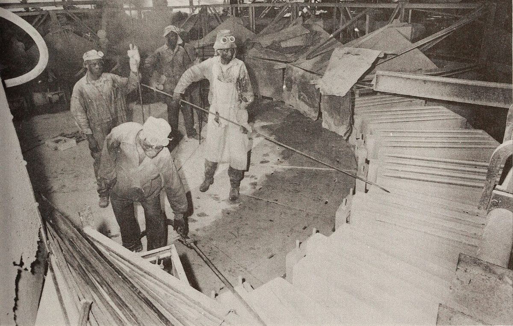

Une société minière congolaise, ancrée à Kolwezi depuis 2009.
Kando Ressources SA est une société de droit congolais détenue à 90 % par Kando Holdings et à 10 % par l'État congolais, conformément au Code minier de 2018. Nous employons 2 340 personnes, dont 93 % de Congolais.
Notre mission
Produire du cuivre et du cobalt dont l'origine et les conditions de production ne laissent aucune question sans réponse : pour nos clients, pour l'État, pour nos voisins.
Nos engagements
Sécurité
Personne ne doit être blessé en travaillant pour nous. Les règles vitales s'appliquent à tous, employés et sous-traitants.
Transparence
Production, paiements à l'État et incidents sont publiés selon un calendrier fixe.
Emploi local
Recrutement et achats en priorité dans le Lualaba, formation pour faire progresser chacun.
Respect
Consultation des communautés avant chaque projet, réponse à chaque plainte dans les 30 jours.
Notre histoire
- 2009
Obtention du permis de recherche sur le gisement de Kando, à 28 km de Kolwezi.
- 2013
Étude de faisabilité bancable : 42 Mt de réserves à 2,4 % Cu et 0,31 % Co.
- 2016
Première cathode de cuivre produite à l'usine de Kando (SX-EW, 35 000 t/an).
- 2019
Extension de l'usine à 65 000 t/an et circuit cobalt (hydroxyde).
- 2022
Mise en service de la centrale solaire de 20 MWc, première du Lualaba sur un site minier.
- 2024
Certification ISO 45001 du site ; lancement de l'audit Copper Mark.
- 2025
Production record : 61 400 t de cuivre cathode. Publication du premier rapport de durabilité vérifié.

Raffinerie de cuivre de Shituru, près de Likasi (archives Gécamines, domaine public). Photo d'illustration.
Comité de direction
Ingénieur des mines (Université de Lubumbashi), 24 ans dans le Copperbelt, dont 9 ans à la direction d'exploitations à ciel ouvert.
Expert-comptable, ancienne auditrice, responsable de la conformité fiscale et des déclarations ITIE depuis 2019.
Métallurgiste, a conduit l'extension de l'usine SX-EW en 2019 et la montée en production de 2024.
Juriste de formation, pilote le cahier des charges sociales, le mécanisme de plaintes et la certification en cours.
Vingt ans de sécurité minière ; zéro accident mortel sur le site depuis trois ans.
Responsable du plan de formation et de la politique d'emploi local, 48 000 heures de formation en 2025.
Conseil d'administration
- Augustin Kalala KabwePrésident du conseil d'administration
- Sarah Mwila NgalulaAdministratrice indépendante, présidente du comité d'audit
- David OkonkwoAdministrateur, représentant de Kando Holdings
- Faustin Lukusa MpoyiAdministrateur, représentant de l'État
Gouvernance
Le conseil d'administration compte quatre membres, dont une administratrice indépendante qui préside le comité d'audit. Un comité santé, sécurité, environnement et communautés se réunit chaque trimestre. Le code de conduite et la politique anticorruption s'appliquent à tous les employés, fournisseurs et sous-traitants ; une ligne d'alerte confidentielle est ouverte à tous.
- Politique de diligence raisonnable sur les mineraisPDF · 0,4 Mo · 2025-06-30Télécharger
- Code de conduite et politique anticorruptionPDF · 0,5 Mo · 2024-11-12Télécharger